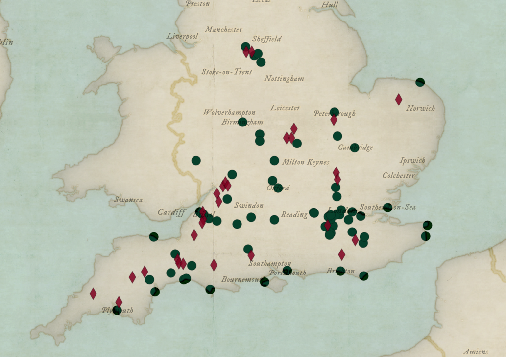
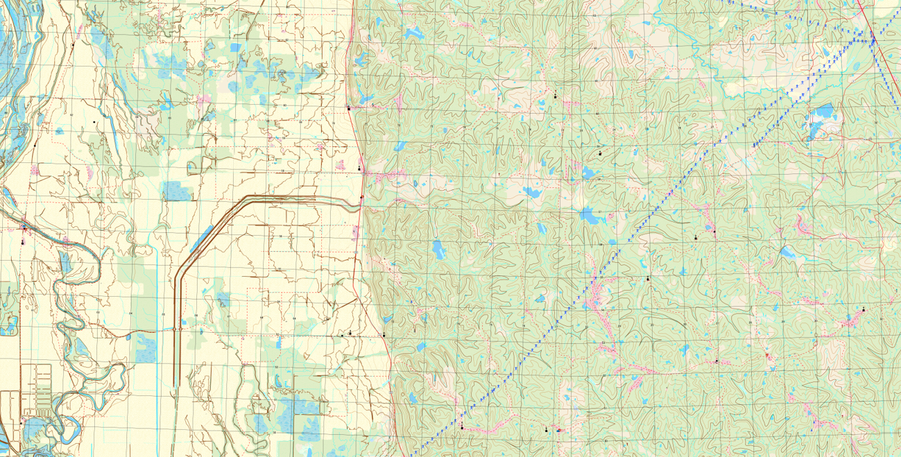

Projects
Geospatial projects showcasing my work and learning.

Jane Austen’s England
Exploring real and fictional locations in Austen’s novels through maps and geospatial storytelling.
View Project

Topo Map
Exploring real and fictional locations in Austen’s novels through maps and geospatial storytelling.
View Project